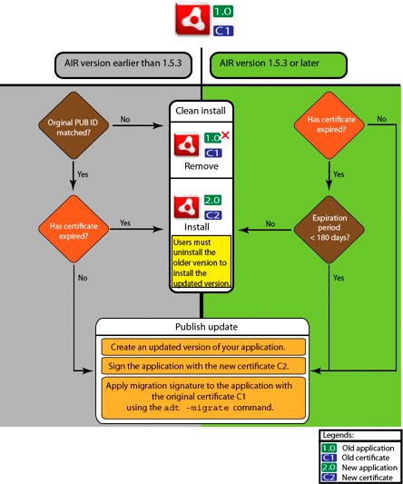

|

Each
time you create an updated version of an existing AIR application
you sign the updated application. In the best case you can use the
same certificate to sign the updated version that you used to sign
the previous version. In that case the signing is exactly the same
as signing the application for the first time.
If the certificate used to sign the previous version of the application
has expired and been renewed or replaced, you can use the renewed
or new (replacement) certificate to sign the updated version. To
do this, you sign the application with the new certificate and you
apply a migration signature using the original certificate. The
migration signature validates that the original certificate owner
has published the update.
Before you apply a migration signature, consider the following
points:
To apply a migration signature, the original certificate
must still be valid or have expired within the last 365 days. This
period is termed as the ‘grace period’ and the duration can change
in the future.
Note: Until AIR 2.6, the grace period was
180 days.
You cannot apply a migration signature after the certificate
expires and the 365 days grace period elapses. In that case, users
must uninstall the existing version before installing the updated
version.
The 365-day grace period only applies to applications specifying
AIR version 1.5.3 or higher in the application descriptor namespace.
Important: Signing updates with migration signatures
from expired certificates is a temporary solution. For a comprehensive
solution, create a standardized signing workflow to manage the deployment
of application updates. For example, sign each update with the latest
certificate and apply a migration certificate using the certificate
used to sign the previous update (if applicable). Upload each update
to its own URL from which users can download the application. For
more information, see Signing workflow for application updates.
The following table and figure summarize the workflow for migration
signatures:
Scenario
|
State of Original Certificate
|
Developer Action
|
User Action
|
|---|
Application based on Adobe
AIR runtime version 1.5.3 or higher
|
Valid
|
Publish the latest version of the AIR application
|
No action required
Application automatically
upgrades
|
Expired, but within 365-day grace period
|
Sign the application with the new certificate. Apply
a migration signature using the expired certificate.
|
No action required
Application automatically
upgrades
|
Expired and not in grace period
|
You cannot apply the migration signature
to the AIR application update.
Instead, you must publish
another version of the AIR application using a new certificate. Users
can install the new version after uninstalling their existing version
of the AIR application.
|
Uninstall the current version of the AIR
application and install the latest version
|
|
|
Valid
|
Publish the latest version of the AIR application
|
No action required
Application automatically
upgrades
|
Expired and not in grace period
|
You cannot apply the migration signature
to the AIR application update.
Instead, you must publish
another version of the AIR application using a new certificate. Users
can install the new version after uninstalling their existing version
of the AIR application.
|
Uninstall the current version of the AIR
application and install the latest version
|
|
|
Any
|
Sign the air application using a valid certificate and
publish the latest version of the AIR application
|
Uninstall the current version of the AIR
application and install the latest version
|
 Signing workflow for updates Migrate an AIR application to use a new certificateTo migrate an AIR application to a new certificate while
updating the application:
Create an update to your application
Package and sign the update AIR file with the new certificate
Sign the AIR file again with the original certificate
using the -migrate command
An AIR file signed with the -migrate command
can also be used to install a new version of the application, in
addition to being used to update any previous version signed with
the old certificate.
Note: When updating an application published for a version of AIR
earlier than1.5.3, specify the original publisher ID in the application
descriptor. Otherwise, users of your application must uninstall
the earlier version before installing the update.
Use the ADT -migrate command with following
syntax:
adt -migrate SIGNING_OPTIONS air_file_in air_file_out
SIGNING_OPTIONS The signing options identify the
private key and certificate with which to sign the AIR file. These
options must identify the original signing certificate and
are described in ADT code signing options.
air_file_in The AIR file for the update, signed with
the new certificate.
air_file_out The AIR file to create.
Note: The filenames used for the input and output AIR files must
be different.
The following example demonstrates calling ADT with the -migrate flag
to apply a migration signature to an updated version of an AIR application:
adt -migrate -storetype pkcs12 -keystore cert.p12 myAppIn.air myApp.air
Note: The -migrate command was added to ADT in
the AIR 1.1 release.
Migrate a native installer AIR application to use a new certificateAn AIR application that is published as a native installer
(for example, an application that uses the native extension api)
cannot be signed using the ADT -migrate command
because it is a platform-specific native application, not a .air file.
Instead, to migrate an AIR application that is published as a native
extension to a new certificate:
Create an update to your application.
Make sure that in your application descriptor (app.xml) file
the <supportedProfiles> tag includes both
the desktop profile and the extendedDesktop profile (or remove the <supportedProfiles> tag
from the application descriptor).
Package and sign the update application as a .air file using
the ADT -package command with the new certificate.
Apply the migration certificate to the .air file using the
ADT -migrate command with the original certificate
(as described previously in Migrate an AIR application to use a new certificate).
Package the .air file into a native installer using the ADT -package command with
the -target native flag. Because the application
is already signed, you don’t specify a signing certificate as part
of this step.
The following example demonstrates steps 3-5 of this process.
The code calls ADT with the -package command, calls
ADT with the the -migrate command, then calls ADT
with the -package command again to package an updated version
of an AIR application as a native installer:
adt -package -storetype pkcs12 -keystore new_cert.p12 myAppUpdated.air myApp.xml myApp.swf
adt -migrate -storetype pkcs12 -keystore original_cert.p12 myAppUpdated.air myAppMigrate.air
adt -package -target native myApp.exe myAppMigrate.air
Migrate an AIR application that uses a native extension to use a new certificateAn AIR application that uses a native extension cannot
be signed using the ADT -migrate command. It also
can’t be migrated using the procedure for migrating a native installer
AIR application because it can’t be published as an intermediate
.air file. Instead, to migrate an AIR application that uses a native extension
to a new certificate:
Create an update to your application
Package and sign the update native installer using the ADT -package command.
Package the application with the new certificate, and include
the -migrate flag specifying the original certificate.
Use the following syntax to call the ADT -package command
with the -migrate flag:
adt -package AIR_SIGNING_OPTIONS -migrate MIGRATION_SIGNING_OPTIONS -target package_type NATIVE_SIGNING_OPTIONS output app_descriptor FILE_OPTIONS
AIR_SIGNING_OPTIONS The signing options identify
the private key and certificate with which to sign the AIR file.
These options identify the new signing certificate and are
described in ADT code signing options.
MIGRATION_SIGNING_OPTIONS The signing options identify
the private key and certificate with which to sign the AIR file.
These options identify the original signing certificate and
are described in ADT code signing options.
The other options are the same options used for packaging
a native installer AIR application and are described in ADT package command.
The following example demonstrates calling ADT with the -package command and
the -migrate flag to package an updated version
of an AIR application that uses a native extension and apply a migration
signature to the update:
adt -package -storetype pkcs12 -keystore new_cert.p12 -migrate -storetype pkcs12 -keystore original_cert.p12 -target native myApp.exe myApp.xml myApp.swf
Note: The -migrate flag of the -package command
is available in ADT in AIR 3.6 and later.
|
|
|